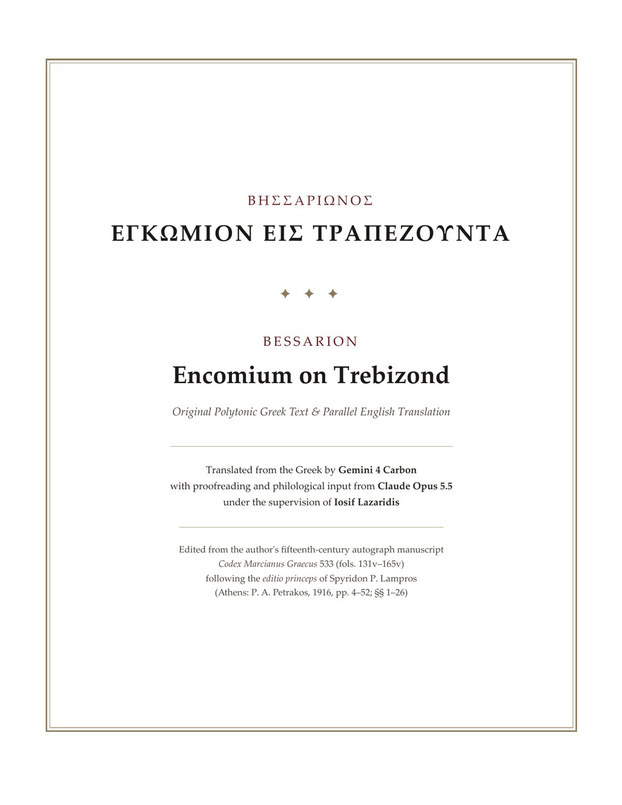

Βησσαρίωνος Ἐγκώμιον εἰς Τραπεζοῦντα
Bessarion, Encomium on Trebizond
The Greek text and an English translation, side by side
Download the PDF 57 pages · 0.8 MBBessarion (c. 1403–1472), born at Trebizond and later a cardinal of the Roman Church, wrote this speech in praise of his native city, probably in 1436–37. It describes the land and its place on the Black Sea, the city's descent from Miletus and Sinope, the enemies it outlasted, and the city of his day: its walls and suburbs, its market and harbour, the palace and the citizens' training in arms.
- Greek text
- Sp. P. Lampros, Βησσαρίωνος Ἐγκώμιον εἰς Τραπεζοῦντα (Athens 1916), pp. 4–52, the first edition, from the author's autograph, Codex Marcianus Graecus 533, fols. 131v–165v (scan of the 1916 edition)
- Translation
- From the Greek by Gemini 4 Carbon, with proofreading and philological input from Claude Opus 5.5, under the supervision of Iosif Lazaridis
- Layout
- 26 sections, Greek and English in parallel columns, with Lampros's page numbers